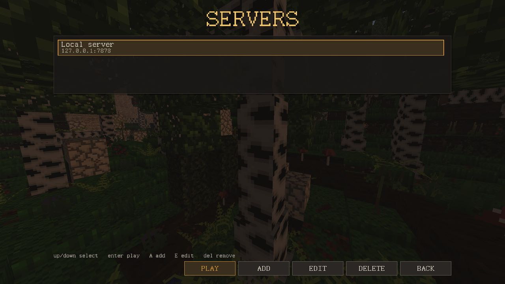

Игра по сети
Одиночная игра — это тот же сервер, только запущенный внутри игры, поэтому общий мир играется точно так же, как ваш собственный.
Как зайти на сервер
- ПО СЕТИ → ДОБАВИТЬ (или A).
- Дайте ему любое ИМЯ и АДРЕС в виде
host:port. Если порт не указать, добавится:7878. Третье поле, ПАРОЛЬ СЕРВЕРА, нужно только для серверов, которые его спрашивают. - СОХРАНИТЬ, выберите сервер, ИГРАТЬ.
E изменяет сервер, Del удаляет его.

- Соединение всегда зашифровано — и с общим сервером, и с вашим собственным миром.
- Ключ сервера. В первый раз игра запоминает ключ сервера. Если тот же адрес потом отвечает другим ключом, игра отказывается подключаться и показывает КЛЮЧ СЕРВЕРА СМЕНИЛСЯ с обоими отпечатками. Доверяйте новому ключу, только если владелец сказал вам, что сменил его.
- Пароль сервера. Закрытый сервер спрашивает пароль при подключении; можно войти один раз или войти и запомнить пароль.
- Окно входа. Если на сервере работает плагин входа, окно в синей рамке, помеченное как собственное окно сервера, в первый раз просит придумать пароль для вашего имени, а потом спрашивает этот пароль. Синяя рамка значит, что пишет сервер, а не игра. После одного входа сервер выдаёт этому устройству ключ, так что пароль снова понадобится только на новом устройстве.
/forgetdevicesзаставляет все ваши устройства снова спросить пароль;/passwordменяет его.
Чем отличается игра с другими людьми
- Карта у каждого своя: что видели другие, они расскажут вам сами.
- Других игроков видно такими, как они одеты, и с тем, что у них в руках.
- Игрока, упавшего без сил, может поднять друг: щёлкните по нему правой кнопкой с бинтом, шиной, едой или кувшином — тем, чего просит его отсчёт. Вещь тратится ваша.
- Тело погибшего игрока может открыть любой. На маленьком сервере первым обычно приходит друг, который был рядом.
- Следы в следующем обновлении видны всем: кто придёт позже, увидит вашу тропу уже постаревшей.
- Панель F3 показывает координаты только операторам. Никому не говорят, где он; дорогу находят по приметам и по своей карте.
Свой сервер
Запустите primitive_server.exe из архива выпуска. При первом запуске он записывает рядом с собой server_settings.toml со всеми значениями; поправьте его и перезапустите. Обычно меняют вот что:
| Настройка | Значение |
|---|---|
bind_addr | адрес и порт, по умолчанию 0.0.0.0:7878 |
server_name | имя, которое видят игроки |
world_seed | сид мира |
max_players | предел игроков |
view_distance_chunks | как далеко сервер отправляет мир |
world_dir | где сохраняется мир (пусто — не сохраняется) |
server_password | пароль сервера; при запуске он заменяется хешем |
[anticheat] | раздел античита, включая enabled |
Чтобы зашли игроки не из вашей сети, откройте порт в брандмауэре и пробросьте его на роутере. Ключ сервера лежит в папке мира как server.key; переносите его вместе с миром, иначе каждому игроку скажут, что сервер подменили.
Плагин входа (plugins/auth) по умолчанию выключен; поставьте enabled = true в его plugin.toml и перезапустите. Без него и без пароля журнал предупреждает, что личность игроков не проверяется: кто ввёл имя, тот под ним и играет.
Команды
Вводятся в консоли сервера или в чате с / впереди. help перечисляет все.
| Команда | Что делает |
|---|---|
list | кто в сети |
players | все, кого помнит сервер |
say <text> | сообщение всем |
time <0.0-1.0>, day, night, dawn, dusk | время суток |
weather clear|rain|storm|auto | задать погоду или отпустить её (оператор) |
tp <x> <y> <z> | телепорт (оператор) |
give <block> [n] | вещи в инвентарь (оператор), например give cobblestone 40 |
kick <name>, op <name>, deop <name> | выгнать, дать и снять права оператора |
save, stop | сохранить мир, остановить сервер |
Сервер помнит каждого игрока по идентификатору, сделанному из имени, вместе с его инвентарём, здоровьем и местом, где он вышел; вернувшийся игрок появляется там, где ушёл. В одиночной игре вы оператор, только если для этого мира включено КОМАНДЫ И ТЕСТИРОВАНИЕ.